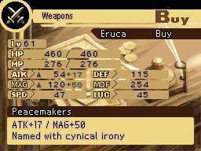

- Home
- Nintendo DS
- Radiant Historia
Radiant Historia
- 2011
- Nintendo DS
- Atlus
- dual-screen handheld
- 7th generation
History
Stocke, an agent of history, weaves two timelines at nodes in Radiant Historia. Atlus released the DS original in 2011, with music by Yoko Shimomura. In battle you push enemies onto one tile so a follow-up can hit the stack.
The timelines are different versions of the same war. A node is a moment where Stocke can cross over and change a choice, then return if that path dies. The history he guards is his job.
Knocking foes into the same square sets up a heavier blow. Where they stand matters more than a static row of fighters. Allies fill the party while he decides which history to repair.
Perfect Chronology is a later remake on another system. Stocke's nodes and Shimomura's score were first heard together on the DS original. Atlus published that first telling.
Related in this catalog
Same series is the tight name match. Same franchise is the wider family. Same platform is other games on the systems named above.
Same series
None in this catalog yet.
Same franchise
No wider family is grouped for this title beyond the series list.
Same platform
Same developer
First developer on the RAWG card: Atlus.
RAWG record
RAWG rating4.33 / 5
Ratings6
RAWG date2011-02-22
ESRB on RAWGNot listed
GenresRPG
DevelopersAtlus
PublishersAtlus
Platforms on RAWGnintendo-ds
Facts in this grid are RAWG's, not our review. Open the RAWG record. RAWG.
Images from RAWG


Screenshots from this RAWG record. Powered by RAWG.
Official option
Confirm with Nintendo
Official option
No current listing is claimed here. This entry records the original hardware release. Confirm any official re-release on Nintendo's website. Where to Play does not host this game.
Nintendo's website Official site
We don't host this game. Confirm the title is still offered before you rely on a library note.